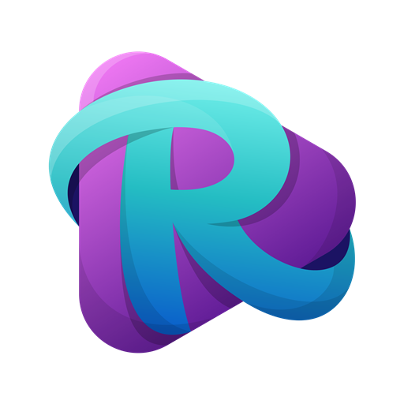

Desenvolvedor
Full Stack
Joinville - SC 📍

Joinville - SC 📍
Estudo e desenvolvo projetos em JavaScript, C#, .NET, Python, Java, TypeScript, React, Angular e entre outros. Faço parte da comunidade de estudantes embaixadores da Microsoft, cujo nome é Microsoft Learn Student Ambassadors.
Desenvolvendo soluções avançadas de planejamento e agendamento (APS) com integrações em diversos sistemas ERP do mercado.
Desenvolvimento e manutenção de projetos ERP - Sistemas de Gestão Empresarial utilizando as linguagens Progress 4GL, HTML e Typescript.
Atualmente estou no quarto ano do curso de bacharel em Engenharia de Software pela faculdade Univille. Entretanto, realizo vários cursos pela internet utilizando várias plataformas, como o LinkedIn Learning, Coursera e Origamid, Udemy e Alura.